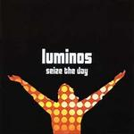

| Artist: | Luminos |
| Title: | Seize The Day |
| Label: | Market Square Records MSMCD115 |
| Length(s): | 47 minutes |
| Year(s) of release: | 2003 |
| Month of review: | [06/2003] |
| 1) | Inner Self 6.44 | |
| 2) | A Small Boy, A Bird In History | 4.10 |
| 3) | Echoes In A Lonely City | 3.58 |
| 4) | If Only For A While | 5.33 |
| 5) | It's Your Turn To Fly | 7.22 |
| 6) | The Voyage (Ocean Freedom) | 6.07 |
| 7) | Living On The Edge Of Time | 4.47 |
| 8) | Angel | 3.51 |
| 9) | Always In My Heart | 4.49 |
If Only For A While is, as could be expected, pretty melodic, this time with male vocals. The guitar is unadventurous, and the drums just a little too far to the front.
After a gentle acoustic intro, Meehan picks up the vocals for It's Your Turn To Fly, in a far from secure way. The extra length of the track is used for a gentle bridge with flute resembling that in Simon & Garfunkel's El Condor Pasa. Unfortunately Meehan comes back up after.
The Voyage opens up decently enough with a nice dragging guitar intro. This track has a nice flow to it, with decent enough vocals and nice instrumental support. The bridge is unexpectedly spicy, with some breaks and fills.
Living On The Edge Of Time mixes up relaxed and more spicy bits. I don't like the dub rhythm the use on part of the track at all, but the up tempo bit has its moments, especially the climax.
Angel is acoustic, gentle and not an asset to this album. Closer Always In My Heart opens loudly, to quickly turn sedate, closing the album in what, I guess, could be called fitting fashion.